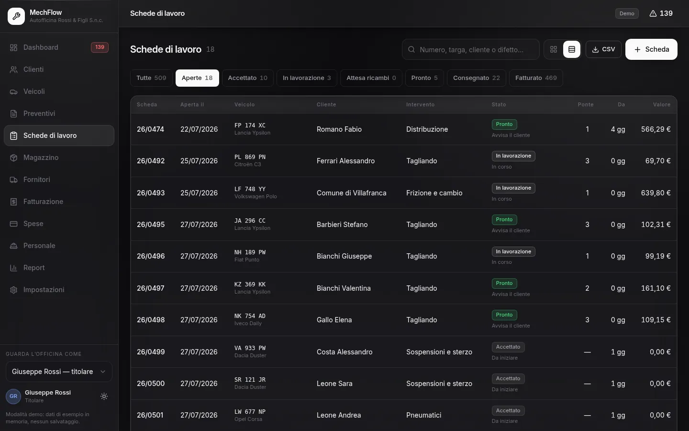

Passo 01 — accettazione
Il veicolo entra
Cliente e veicolo, difetto lamentato, chilometri all’ingresso. Se il veicolo è già passato, c’è già tutto: targa, storico degli interventi, scadenze.
La scheda nasce qui, anche prima di sapere quanto costerà: è l’oggetto che tiene insieme tutto il resto.
- La coda del giorno è l’elenco delle schede aperte
- Ogni scheda dice da quanti giorni è ferma e su che ponte sta